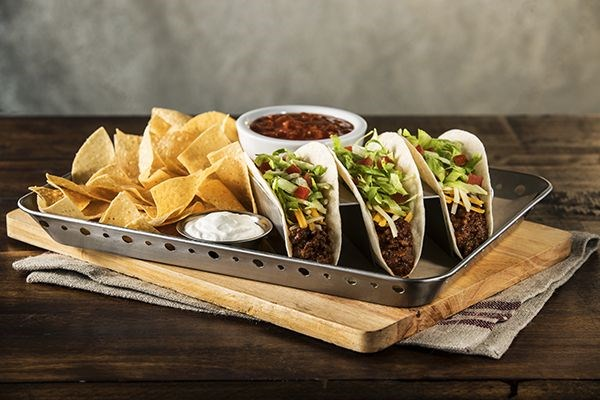

Chili’s 1975 Soft Tacos

Party like it’s 1975 with this Chili’s classic. Three flour tortillas filled with Original Chili,
heese, lettuce, tomatoes. Served with sour cream, chips & salsa.
"This is the easiest chili recipe, and it is delicious and sure to please everyone.
Using home canned tomatoes gives the best flavor, but is not necessary. Enjoy."
Ingredients
- 2 pounds ground beef
- 2 onions, chopped
- 4 cloves garlic, minced
- 2 tablespoons chili powder
- 2 teaspoons salt
- 2 teaspoons dried oregano
- 4 (14.5 ounce) cans stewed tomatoes
- 1 (15 ounce) can tomato sauce
- 1 (15 ounce) can kidney beans with liquid
Directions
- Combine ground beef, onion, and garlic in large stockpot. Cook and stir over medium heat until beef is
brown. Drain.
- Stir in chili powder, salt, oregano, tomatoes, and tomato sauce; break up tomatoes while stirring. Heat to
boiling, reduce heat to simmer, and cover. Cook, stirring occasionally, for 1 hour.
- Stir in beans. Simmer, uncovered, for 20 minutes; stir occasionally.
Nutrition facts
Per Serving: 482 calories; 31.2 g fat; 27.9 g carbohydrates; 24.9 g protein; 96 mg cholesterol; 1517 mg sodium.
This recipe was taken from allrecipes.com